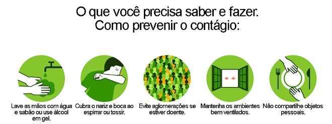
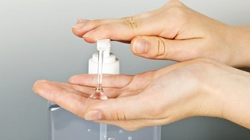
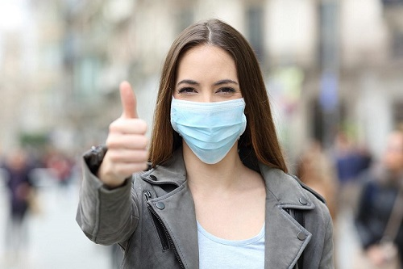

Quais são os meios de prevenção?

O Ministério da Saúde recomenda as seguintes medidas para a prevenção e consequentemente o combate ao COVID:
- Lavar com frequência as mãos até a altura dos punhos, com água e sabão, ou então higienizar com álcool 70 %.
A frequência das lavagens das mãos deve ser aumentada quando a pessoa estiver em locais públicos como transporte, prédios, ambientes de trabalho, comércio e quando tocar em superfícies e objetos compartilhados. - Ao tossir ou espirrar, cubra nariz e boca com lenço ou com a parte interna do cotovelo para evitar o espalhamento das gotículas de salivas no ar.
- Não tocar olhos, nariz, boca ou a máscara de proteção facial com as mãos não higienizadas. Se tocar olhos, nariz, boca ou a máscara, higienize sempre as mãos como já indicado.
- Mantenha distância mínima de 1 (um) metro entre pessoas em lugares públicos e de convívio social. Evite abraços, beijos e apertos de mãos.
- Higienize com frequência o celular, brinquedos das crianças e outros objetos que são utilizados com frequência.
- Não compartilhe objetos de uso pessoal como talheres, toalhas, pratos e copos.
- Mantenha os ambientes limpos e bem ventilados.
- Evite circulação desnecessária nas ruas, estádios, teatros, shoppings, shows, cinemas e igrejas.
- Se estiver doente, evite contato próximo com outras pessoas, principalmente idosos e doentes crônicos, busque orientação pelos canais on-line disponibilizados pelo SUS ou atendimento nos serviços de saúde e siga as recomendações do profissional de saúde.
- Durma bem e tenha uma alimentação saudável e equilibrada.
- Recomenda-se a utilização de máscaras em todos os ambientes. As máscaras de tecido (caseiras/artesanais), não são Equipamentos de Proteção Individual (EPI), mas podem funcionar como uma barreira física, em especial contra a saída de gotículas potencialmente contaminadas.
- Estimule familiares, amigos e colegas de trabalho sobre a importância do uso de máscara e da higienização das mãos na prevenção da disseminação do vírus causador da doença COVID-19.

